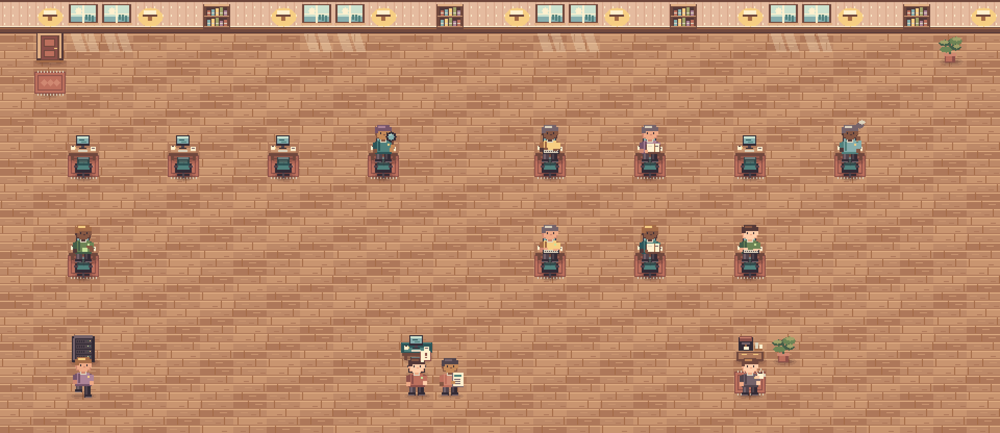
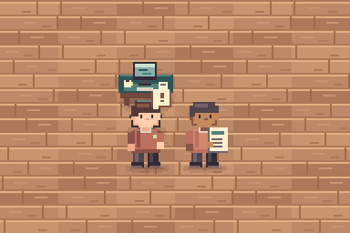
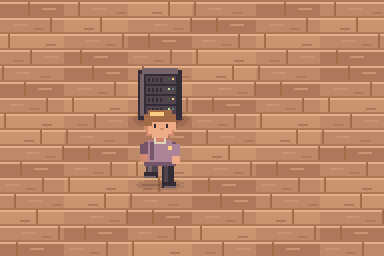
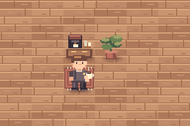
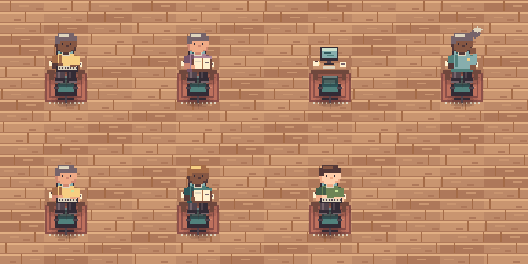
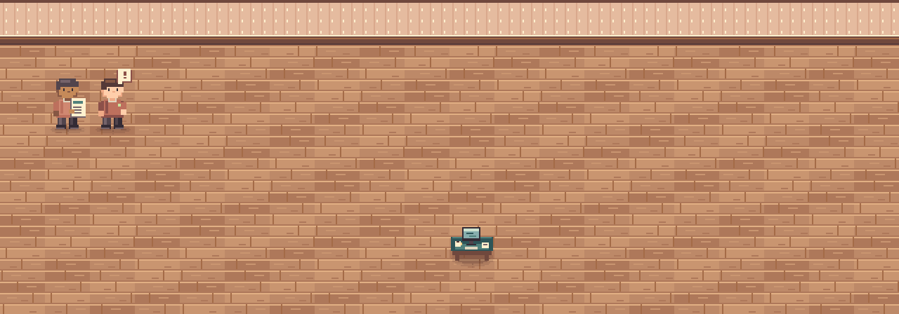

Your AI agents, in one office.
Every coding agent on your machine gets a desk and an avatar.

They go where the work is.
-

Your desk
An agent walks over when it needs permission or an answer, and brings a report when it finishes. You click Accept.
-

The server rack
Running a command or the tests. The rack lights blink while it works.
-

The pantry
Idle, waiting for a new task. Time for coffee.
At the desk, you see the tool.

- Reading filesLeafs through papers
- Editing codeTypes fast
- Searching the webPeers through a magnifier
- Hit an errorSmoke rises from the monitor
- Session endedLeaves through the door
Keep the office in a corner.
A small window stays on top of your work, with your desk and whoever is walking to it. Click it for the full office.
Click an avatar to see its last steps. You reply in the agent’s own app: the card opens it in Orca, VS Code or tmux.

Where your agents already run.
Read from each agent’s process and environment.
| The agent runs in | How SeKantor knows |
|---|---|
| A terminal | Claude Code hooks |
| VS Code | VSCODE_PID |
| Claude desktop | CLAUDE_CODE_ENTRYPOINT |
| Orca | ORCA_AGENT_SESSION_ID |
| OpenBot | OPENBOT_AGENT_PROCESS |
| tmux | TMUX and the pane, for Codex, opencode, Gemini CLI and aider |
Nothing leaves this machine.
127.0.0.1- The only address the hub listens on. No account, no cloud.
~/.sekantor/token- Every local request needs it.
- No telemetry
- No network calls of its own. Events stay in one SQLite file for seven days.
- Watch-only
- It never approves anything for an agent. If the hub stops, your agents carry on.
Pre-alpha, Windows first.
| What | State |
|---|---|
| Windows installer, unsigned | Built on CI |
| Signed installers | Coming |
| macOS and Linux | Coming |
| Restyle the office by prompt | Planned |
| Public beta | Planned, 25 January 2027 |
uv sync
(cd web && npm ci && npm run build)
uv run sekantor up
uv run sekantor install claude --project